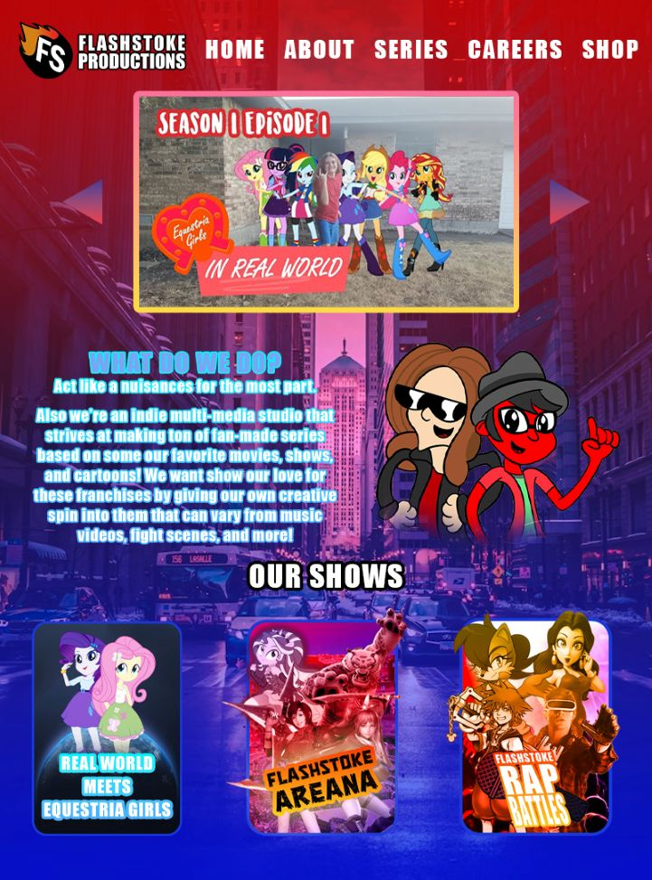

With Sketching It's usually an accesible way to plan out your design mainly because it can be done in paper without any of the delays and troubles when doing it online. Plus it's flexible for anyone to switch from high and low production ideas on the same page, it allows the process to be more focused structed properly. Plus there's little to no distractions to when you're working since there not that much visual design here.However going into this kind of workflow is done on a physical format it's not easy to simply put in an application or export it as a pdf. Some will need to use some duplication product in order to actually do so. Not to mention unless you're a really talent artist who can tradionally draw on paper there's a chance you're sketched plan might not look so visualy please. Espically cause on software most who don't exactly have artistic vision can choose some template they can easily edit for thier ideal style along with putting plenty of media such as videos and photos into the plan. Plus sketching will no kind of internactive elements into the work no animations or any advanced technqiues that software wire framing usualy has. Plus it's also impoossible to make any timestamps on the plan or make any copies of it, ones that are at least editable. Plus if you were hoping to work with other peopl in your project there's a small chance you won't be able to collaborate with a lot of people at least not from a far distance. Plus there's also the off chance that some elements will become inconsistent if you're not carful with a pencil not to mention there won't be any way to contorl z your mistkaes and pencil doesn't always come off easily.
Going off of all these I can safely say going digital will be the best place to plan out my project. I'm already more acustom to doing most of my work online anyway and good majority of my work on projects for my YouTube channel is already online. I constantly need to contact my friend and cast online since many of us either travel often or live in far off locations from one another. Therefore it'll be easier to gain feedback on whatver we're working on (ie. videos, voice lines, animated segments). So ultimately online is the way to go for my work.
